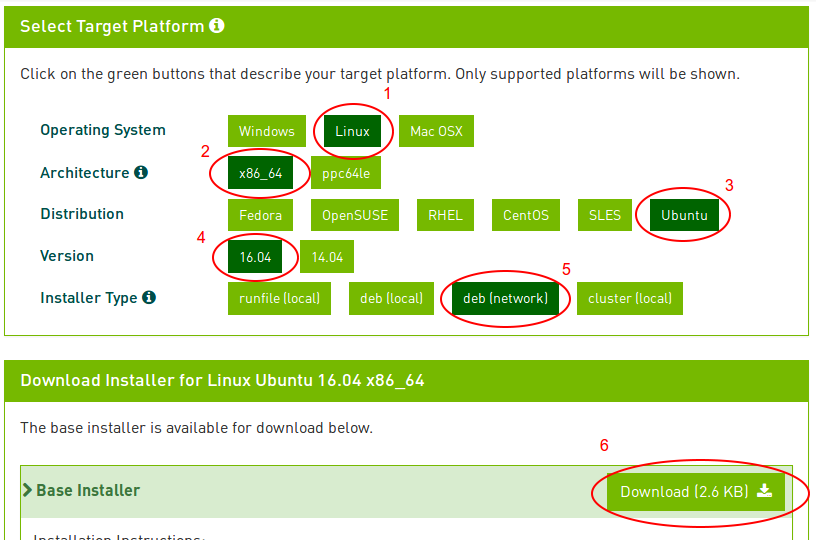
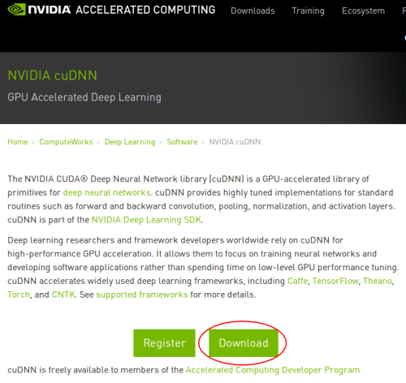

TensorFlowのインストール(GPU利用編)
このページはCUDAに対応したNVidia製グラフィックカードを持っている人向けの内容です。
このページではGPU計算を有効にしたTensorFlowをインストールする手順を紹介します。 GPUは並列化処理に優れておりTensorFlowでの数値計算速度を向上させることができます。
TensorFlowはCUDAと呼ばれる、NVidia社が開発した並列計算プラットフォームを利用して高速化させることができます。CUDAについてはこちらを参考にしてください。
GPU版TensorFlowが利用できるNVidia GeForce GPU
2017年3月6日現在、TensorFlowのインストールページではCuda Compute Capability3.0以上のグラフィックカードが必要と記載されていいます。
CUDA 3.0以上対応GeForceグラフィックカードは下記のとおりです。
参考:CUDA GPUs
ざっと見たところ、6XX系以上のGeForceグラフィックカードを持っていれば大丈夫のようです。
デスクトップ版GeForce
| GTX 10XX系 | 1080Ti, 1080, 1070, 1060, 1050 |
| TITAN系 | NVIDIA TITAN X, GTX TITAN X, GTX TITAN Z, GTX TITAN Black |
| GTX 9XX系 | 980Ti, 980, 970, 960, 950 |
| GTX 7XX系 | 780Ti, 780, 770, 760, 750Ti, 750 |
| GT 7XX系 | GT740, GT730(*), GT720, GT705 |
| GTX 6XX系 | 690, 680, 670, 660Ti, 660, 650Ti BOOST, 650Ti, 650 |
| GT 6XX系 | GT640[GDDR5版] |
ノートブック版GeForce
| 10XX系 | 1080, 1070, 1060 |
| 9XX系 | 980, 980M, 970M, 965M, 960M, 950M, 940M, 930M, 920M, 910M |
| 8XX系 | 880M, 870M, 860M, 850M, 840M, 830M |
| 7XX系 | 780M, 770M, 765M, 760M, 750M, 745M, 740M, 735M, 730M |
| GTX 6XX系 | 680MX, 680M, 675MX, 670MX, 660M, 650M, 645M, 640M, 640M LE |
インストール環境
手順を作成するにあたって用意したマシン環境です。
| GPU | NVidia GeForce GTX 780 | ASUS GTX780-DC2OC-3GD5 |
| OS | Ubuntu 16.04 64bit | Ubuntu Desktop |
| Python | 3.5.2 | sudo apt-get install python3 |
| TensorFlow | r1.0 | https://github.com/tensorflow/tensorflow/tree/r1.0 |
インストール手順
Ubuntu 16.04/Python3.5/GPUサポート有り/GTX780/ソースインストール/virtualenv利用 の構成でのインストール手順を紹介します。
ちなみにこの手順は2017/3/7に検証した手順であり、将来同じ手順で正しくTensorFlowをインストールできない可能性があります。
1. CUDA Tookitのインストール
参考:NVIDIA CUDA Installation Guide For Linux
CUDAが利用できるGPUが認識されているか確認
ここで何も表示されない場合、NVIDIA製のグラフィックボードがインストールされていない、もしくは認識されていないため これ以降の手順は実施できません。
gccがインストールされていることを確認します。
gcc 5.3.1以降がインストールされていればOK
Linuxカーネルヘッダーをインストールします。
Ubuntu 16.04用のCUDA Tookitをインストールします。
まず、CUDAダウンロードページからUbuntu用debファイルをダウンロードします。

ダウンロードした.debファイルは/tmpに移動しておきます。
cuda toolkitをインストールします。(インストールサイズが2GBほどあるので注意。ネットワークが遅いと数十分から数時間かかります。)
環境変数LD_LIBRARY_PATHを設定します。
2. cuDNNのインストール
参考:NVIDIA cuDNN
cuDNNはディープラーニング研究者・開発者用のライブラリであり、ダウンロードするにはnVidiaのAccelerated Computing Developer Programのメンバーになる必要があります。 メンバー登録自体は簡単で、nVidiaのサイトでアカウントを作成するだけです。
nVidiaのcuDNNダウンロードサイトに行きDownloadボタンをクリックします。
Join Nowボタンをクリックします。
Eメールアドレス、氏名、組織名、国、規約に同意ボタンをチェックし、Nextボタンをクリックします。
組織ではなく個人で登録する場合は組織名(Organization)の箇所は適当にIndividual Developerとでもしておけば良いです。
次のページに行くとアンケート形式でいくつか質問をされます。
登録完了後再度上のDownloadボタンを押すことでcuDNNをダウンロードすることができます。
インストール方法はメンバー登録後cuDNNのダウンロードページにあるインストールガイドに記載されているのでそちらを参考にしてください。
私の環境ではダウンロードしたcuDNNのアーカイブ内のlib64/, include/ディレクトリをそのままCUDA Toolkitの$LD_LIBRARY_PATHに上書き展開しています。
3. libcupti-devのインストール
4. Bazelのインストール
参考URL:https://bazel.build/versions/master/docs/install.html
BazelはGoogle製のビルドツールです。TensorFlowをソースからビルドする際に必要になります。
bazelがJDK1.9に対応していないため、JDK1.9がOSにインストールされていると上記手順途中でエラーが発生します。
私は下記のようにしてJava9/JDK1.9をアンインストールしました。
* 利用している他のソフトウェアがJava1.9を利用している場合はそのソフトウェアが動作しなくなる可能性があります。
コマンドの意味や影響がわからなければ実行しないでください。
次にJDK1.8をインストールします。
Bazelの配布用URIとパッケージソースの追加
Bazelのインストール
5. PythonのVirtualenv環境のセットアップ
TensorFlow専用のPython実行環境を作成します。Virtualenvを使うとプロジェクト専用のPythonバージョン、Pythonソフトウェアパッケージ を構築できるようになります。Virtualenv環境を切り替えるとPythonのバージョンや利用できるパッケージも自由に切り替えられるようになります。
pip3をインストールします。
virtualenvをインストールします。
TensorFlow用のvirtualenv環境を作成し、環境を有効にします。下記のコマンドを実行すると/home/<ユーザ名> ディレクトリ直下に 新たにtensorflowというディレクトリを作成します。
環境が有効になっていればプロンプトが下記のように変化しているはずです。
この状態でpip installを実行すると、このvirtualenv環境にのみpipパッケージがインストールされます。
※ちなみに環境を抜けたい場合は下記を実行すればOKです。
次にTensorFlowで必要なパッケージをvirtualenv環境にインストールします。
6. TensorFlowのソースをダウンロード/ビルド構成を設定する。
まずはGithubのTensorFlowのレポジトリからソースコードをダウンロードします。
ソースのビルド構成を設定します。下記を参考にCUDAに関係しない設定はそのままEnterでデフォルトの設定を使うようにします。
ちなみに私の環境ではここで下記のようなエラーが出力されてしまいました。
ERROR: /home/ユーザ名/projects/tensorflow/tensorflow/python/BUILD:2275:1: every rule of type _py_wrap_cc implicitly depends upon the target '@swig//:templates', but this target could not be found because of: no such package '@swig//': Error downloading [http://bazel-mirror.storage.googleapis.com/ufpr.dl.sourceforge.net/project/swig/swig/swig-3.0.8/swig-3.0.8.tar.gz, http://ufpr.dl.sourceforge.net/project/swig/swig/swig-3.0.8/swig-3.0.8.tar.gz, http://pilotfiber.dl.sourceforge.net/project/swig/swig/swig-3.0.8/swig-3.0.8.tar.gz] to /home/ユーザ名/.cache/bazel/_bazel_ユーザ名/3f6df72b6e217920e9a8b0ddfd37c24d/external/swig/swig-3.0.8.tar.gz: All mirrors are down: [].
ERROR: Evaluation of query "deps((//tensorflow/... - //tensorflow/examples/android/...))" failed: errors were encountered while computing transitive closure.私が確認した限りでは、tensorflowの外部依存パッケージ'swig'のダウンロードタイムアウトが原因のエラーのようです。
curlコマンドで上記エラー内の"bazel-mirror.storage.googleapis.com"と"pilotfiber.dl.sourceforge.net"および"pilotfiber.dl.sourceforge.net"
に対してswig-3.0.8.tar.gzのダウンロードを試してみたところ、"bazel-mirror.storage.googleapis.com"以外の2つのミラーサイトの反応が遅いことがわかりました。
(数秒待てばダウンロード自体は始まります)。
おそらくbazelはパッケージのダウンロードに対するレスポンスタイムアウトの閾値が厳しく設定されており、
パッケージの配信サーバがもたつくとサーバがダウンしていると判断してしまうようです。
この問題を解決するため、 tensorflow/tensorflow/workspace.bzl ファイルを下記のように修正し、
レスポンスが遅い２つのサーバをダウンロードリストから外して再度./configureコマンドを実行したところ、無事エラーなくコマンドが完了しました。
"http://ufpr.dl.sourceforge.net/project/swig/swig/swig-3.0.8/swig-3.0.8.tar.gz", ←この行を削除
"http://pilotfiber.dl.sourceforge.net/project/swig/swig/swig-3.0.8/swig-3.0.8.tar.gz", ←この行を削除
], strip_prefix = "swig-3.0.8", build_file = str(Label("//third_party:swig.BUILD")), )
同じようなエラーが発生した方は上記の方法を試してみてください。./configureコマンドの実行が完了したあとは、ソースコードをgit reset --hardで戻しておきましょう。
7. TensorFlowのソースをビルドする。
bazel buildでソースをビルドします。
ちなみに私のマシン(CPU: i7-2600K@3.9GHz, 4C8T, RAM: 16GB)では23分かかりました。
CPU使用率もほとんどの時間で8コアとも使用率100%、メモリも見ていた限り最大で11GBほど使用していました。
他の作業と同時並行でビルドするのはやめたほうが良いです。他のアプリを閉じたうえでビルドしましょう。
上記のコマンドが完了すると、bazel-bin/tensorflow/tools/pip_package/build_pip_packageというファイルが作成されます。 そのファイル名の通り、TensorFlowのpipパッケージを作成するツールです。
※上記のコマンドはAVX/AVX2/FMA/SSE4.2の拡張命令セットが使えるCPUでのみ有効です。(ビルドは成功しますがプログラム実行時にエラーが発生します。)
私の持っているCPU(Intel Core i7 2600K)ではAVX2とFMAはサポートされてなかったため、AVX2/FMAに関するオプションを削除した上で実行しました。
8. TensorFlowのpipパッケージを作成し、インストールする。
カスタムビルドしたTensorFlowをpipパッケージ化します。 下記のコマンドを実行すると、/tmp/tensorflow_pkgディレクトリ直下にpipパッケージファイル(~.whl)を生成します。 このコマンドは先程までとは違い、20秒ほどで完了します。
生成された.whlファイルでpipインストールします。
これでTensorFlowのソースインストールは完了です。
9. インストールの検証
TensorFlowが正しくインストールされたか確認します。